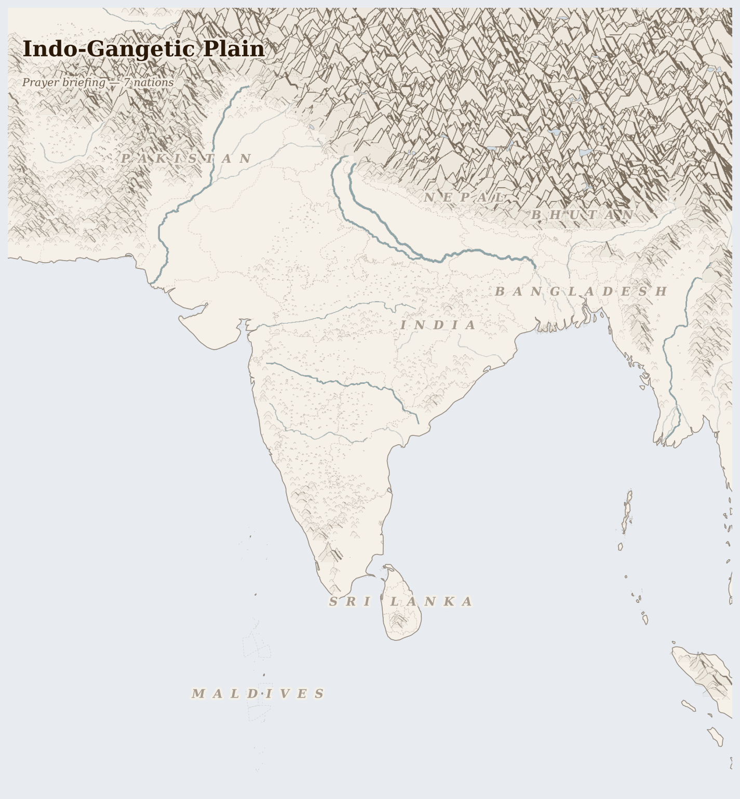

Indo-Gangetic Plain1908M people
ecology last verified 2 months ago
Ecosystem
Largest deltaic system — extreme monsoon vulnerability
The monsoon arrives in June. It crosses the Arabian Sea, hits the Western Ghats, and within days the rivers remember what they are for. In Bangladesh, 160 million people live on a delta that the Ganges, Brahmaputra, and Meghna rivers built over millennia — silt carried from Himalayan glaciers and deposited in layers that became the most fertile farmland in South Asia. The monsoon feeds this system.

Reference map. Country boundaries and features are approximate.
Lives Lived Here
In Bihar, a Dalit agricultural labourer harvests rice on land she will never own. The paddy was planted when the monsoon arrived in June and will be threshed by December. Her daily wage is set by the landowner. Her son attends government school when he is not needed in the fields, which is to say he attends intermittently. The rice she harvests enters the Public Distribution System — India's vast subsidised food network — but the ration she receives from it arrives irregularly and never in full. She is simultaneously the producer and the inadequately served consumer of the same grain.
For Prayer
For the 26.0 million people across Indo-Gangetic Plain who cannot meet their daily food needs. This week in Pakistan: Authors Davies, Stephen Ali, Muhammad Tahir Akram, Iqra Hafeez, Mohsin Ringler, Claudia Abstract/Description Pakistan’s water crisis has steadily evolved into a binding constraint on economic growth, food security, and climate resilience. That supply routes hold, that harvests come, that aid reaches those cut off.
26.0M people in IPC Phase 3+ (IPC)
rice and wheat → Domestic consumption, global markets. Cost borne by smallholder farmers (input costs rising, prices controlled), landless agricultural laborers, populations dependent on PDS (quality and access issues).
Tehrik-i-Taliban Pakistan
Driven by: We must wage jihad against the apostate state and its Western allies
The trap: Seeking to govern through violence that makes governance impossible. The TTP demands Sharia law but its indiscriminate attacks on markets, schools, and mosques destroy the social fabric any legal system requires. The Islamic state it envisions cannot be built on the ruins its methods create.
Material role: extortion in tribal areas; kidnapping; smuggling
Pakistan's 110 percent water stress, combined with 7.5 million food insecure and pre-monsoon temperatures already reaching 34 degrees, signals continued deterioration through the June-September monsoon season.
For the 4,000 people displaced from their homes — especially in Pakistan, where the crisis is most acute. This week in Bangladesh: • 1.2 million people received WFP’s assistance, including 1.1 million Rohingya refugees. • Through USDA-funded school feeding programme, 25,000 Bangladeshi children across 149 government primary schools received nutritious daily snacks. For safety on the road and welcome at the journey's end.
4K people displaced (UNHCR)
ready-made garments → EU, US, UK retail chains. Cost borne by 4 million garment workers (80% women, $95/month minimum wage), workers in unsafe factories (Rana Plaza precedent), communities near tanneries (toxic waste).
Tehrik-i-Taliban Pakistan
Driven by: We must wage jihad against the apostate state and its Western allies
The trap: Seeking to govern through violence that makes governance impossible. The TTP demands Sharia law but its indiscriminate attacks on markets, schools, and mosques destroy the social fabric any legal system requires. The Islamic state it envisions cannot be built on the ruins its methods create.
Material role: extortion in tribal areas; kidnapping; smuggling
Pakistan's 110 percent water stress, combined with 7.5 million food insecure and pre-monsoon temperatures already reaching 34 degrees, signals continued deterioration through the June-September monsoon season.
For the land itself — water stress averaging 61% across the region. For pastoralists seeking grazing, for farmers awaiting rain, for the rivers and aquifers that sustain everything. For the land beneath their feet, from which ready-made garments and ganges-brahmaputra-meghna river system is extracted to benefit those far away.
water stress 61% of withdrawal capacity (Aqueduct WRI)
Ganges-Brahmaputra-Meghna river system → Bay of Bengal delta. Cost borne by flood-affected communities (30% of country floods annually), climate migrants moving to Dhaka slums, coastal communities facing salinisation.
Tehrik-i-Taliban Pakistan
Driven by: We must wage jihad against the apostate state and its Western allies
The trap: Seeking to govern through violence that makes governance impossible. The TTP demands Sharia law but its indiscriminate attacks on markets, schools, and mosques destroy the social fabric any legal system requires. The Islamic state it envisions cannot be built on the ruins its methods create.
Material role: extortion in tribal areas; kidnapping; smuggling
Pakistan's 110 percent water stress, combined with 7.5 million food insecure and pre-monsoon temperatures already reaching 34 degrees, signals continued deterioration through the June-September monsoon season.
Especially for Pakistan, facing the most severe convergence of crises in this region. This week in Pakistan: 30 April 2026, Islamabad, Pakistan – In the narrow, muddy lanes of Ghorabari, Sindh, Ali Muhammad’s motorbike brings hope and medical science to the most remote communities. For those making impossible decisions about whether to stay or flee, and for those who cannot choose.
26.0M affected (aggregate)
ready-made garments → EU, US, UK retail chains. Cost borne by 4 million garment workers (80% women, $95/month minimum wage), workers in unsafe factories (Rana Plaza precedent), communities near tanneries (toxic waste).
Tehrik-i-Taliban Pakistan
Driven by: We must wage jihad against the apostate state and its Western allies
The trap: Seeking to govern through violence that makes governance impossible. The TTP demands Sharia law but its indiscriminate attacks on markets, schools, and mosques destroy the social fabric any legal system requires. The Islamic state it envisions cannot be built on the ruins its methods create.
Material role: extortion in tribal areas; kidnapping; smuggling
Pakistan's 110 percent water stress, combined with 7.5 million food insecure and pre-monsoon temperatures already reaching 34 degrees, signals continued deterioration through the June-September monsoon season.
For humanitarian workers and missionaries in Indo-Gangetic Plain — for their safety, their courage, and their capacity to reach those most in need.
ready-made garments → EU, US, UK retail chains. Cost borne by 4 million garment workers (80% women, $95/month minimum wage), workers in unsafe factories (Rana Plaza precedent), communities near tanneries (toxic waste).
Tehrik-i-Taliban Pakistan
Driven by: We must wage jihad against the apostate state and its Western allies
The trap: Seeking to govern through violence that makes governance impossible. The TTP demands Sharia law but its indiscriminate attacks on markets, schools, and mosques destroy the social fabric any legal system requires. The Islamic state it envisions cannot be built on the ruins its methods create.
Material role: extortion in tribal areas; kidnapping; smuggling
Pakistan's 110 percent water stress, combined with 7.5 million food insecure and pre-monsoon temperatures already reaching 34 degrees, signals continued deterioration through the June-September monsoon season.
For every act of resistance and care in Indo-Gangetic Plain — communities sharing food, farmers saving seed, neighbours sheltering neighbours. That these small acts of defiance outlast the crisis.
ready-made garments → EU, US, UK retail chains. Cost borne by 4 million garment workers (80% women, $95/month minimum wage), workers in unsafe factories (Rana Plaza precedent), communities near tanneries (toxic waste).
Tehrik-i-Taliban Pakistan
Driven by: We must wage jihad against the apostate state and its Western allies
The trap: Seeking to govern through violence that makes governance impossible. The TTP demands Sharia law but its indiscriminate attacks on markets, schools, and mosques destroy the social fabric any legal system requires. The Islamic state it envisions cannot be built on the ruins its methods create.
Material role: extortion in tribal areas; kidnapping; smuggling
Psalm 107 (Thanksgiving)
O give thanks to the Lord, for he is gracious, for his steadfast love endures for ever. Let the redeemed of the Lord say this, those he redeemed from the hand of the enemy,
Collect — joy
God our redeemer, you have delivered us from the power of darkness and brought us into the kingdom of your Son: grant, that as by his death he has recalled us to life, so by his continual presence in us he may raise us to eternal joy; through Jesus Christ your Son our Lord, who is alive and reigns with you, in the unity of the Holy Spirit, one God, now and for ever.
Amen.
Take Action
Organizations working at the nodes this briefing traces
Global alliance dedicated to improving working conditions in the garment industry. Campaigns for living wages, union rights, and corporate accountability in Bangladesh, India, and Pakistan garment factories supplying European and American brands.
Targets the garment labor flow the briefing traces — where 4 million mostly women workers in Dhaka's factories produce fast fashion under conditions that the Rana Plaza collapse exposed, connecting brand purchasing practices to wage theft, building safety, and suppression of organizing.
Public interest law organization litigating environmental cases in Bangladesh, including tannery pollution in Hazaribagh, ship-breaking contamination in Chittagong, and river encroachment by industrial estates. Files constitutional writ petitions on behalf of affected communities.
Litigates at the nodes where the briefing's industrial flows produce environmental sacrifice zones — Chittagong shipbreaking yards where workers dismantle tankers containing asbestos and heavy metals, and tannery effluent from Dhaka's leather industry poisoning the Buriganga River.
Research network producing evidence on environmental-economic linkages across South Asia, including monsoon variability impacts on rice yields, flood damage costs, and the economics of groundwater depletion in the Indo-Gangetic plain.
Quantifies the climate-agriculture nexus the briefing documents — how monsoon shifts alter rice production for 500 million people, how groundwater pumping for irrigation is depleting aquifers across Punjab and Bihar, and the economic losses from increasingly erratic flooding in Bangladesh.
Federation of fish worker trade unions across India representing 3.5 million artisanal and small-scale fishers. Advocates against industrial trawling, coastal zone encroachment, and port expansion that displaces traditional fishing communities along the Ganges delta and Bay of Bengal.
Represents the Ganges fishery cost-bearers the briefing identifies — artisanal fishers whose livelihoods are destroyed by industrial pollution, dam-altered sediment flows, and coastal aquaculture expansion, connecting upstream infrastructure decisions to downstream livelihood collapse.
Documents human rights violations linked to economic exploitation across South Asia, including bonded labor in brick kilns, land grabs for special economic zones, and worker deaths in shipbreaking. Publishes field investigation reports with survivor testimony.
Investigates the labor exploitation the briefing traces across multiple flows — bonded labor in India's brick kilns feeding urban construction, migrant worker deaths in Chittagong's shipbreaking yards, and garment factory conditions that treat workers as disposable inputs to global supply chains.
International organization supporting small-scale fishworker rights, based in Chennai. Documents how coastal industrialization, blue economy policies, and climate change impact fishing communities across the Bay of Bengal, Arabian Sea, and inland waterways.
Connects the Ganges fishery and coastal livelihoods the briefing documents — where Sundarbans fishing communities face simultaneous pressures from cyclone intensification, mangrove destruction for shrimp aquaculture, and upstream pollution, naming the people whose food sovereignty depends on these flows.
Where this comes from (14 sources)
Tier 1 = UN agencies & peer-reviewed · Tier 2 = community voice & justice orgs · Tier 3 = corporate / unverified
- India Meteorological Department, Monsoon Report, 2024. https://mausam.imd.gov.in
- ICIMOD, The Hindu Kush Himalaya Assessment, 2023. https://www.icimod.org
- ILO, Working Conditions in the Ready-Made Garment Sector in Bangladesh, 2024
- World Bank, South Asia Economic Focus, 2024 T1
- IPCC AR6, South Asia Climate Projections, 2021
- IPC, South Asia Food Security Analysis, 2024. https://www.ipcinfo.org T1
- FAO AQUASTAT, Indus and Ganges Basin Profiles, 2024 T1
- NGO Shipbreaking Platform, South Asia Quarterly Update, 2024. https://shipbreakingplatform.org
- Lancet Planetary Health, Health Burden of Crop Residue Burning in South Asia, 2023
- UNHCR, South Asia Displacement Overview, 2024. https://data.unhcr.org T1
- FAO, Rice Market Monitor, 2024. https://www.fao.org T1
- ADB, Asian Development Outlook, 2024. https://www.adb.org
- ILO, Forced Labour and Human Trafficking in South Asian Agriculture, 2023
- ACLED, South Asia Conflict Data, 2024. https://acleddata.com T1
Generated 2026-05-11